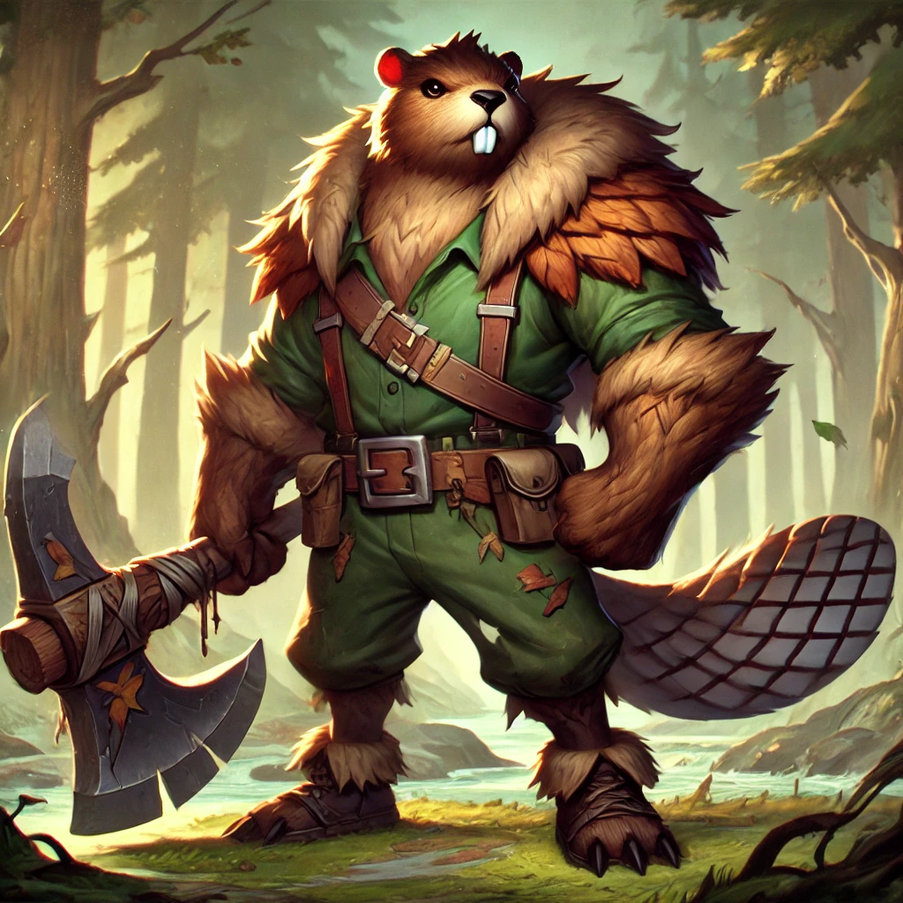

Location : Demacia - The Silent Forest
Relations : Garen, Morgana, Sylas
Role : Jungle / Fighter / Support
Range Type : Corps-à-corps
Damage Type : 100% physical
Mana: no
Has CC: 2
Has Dash/TP: 1
Difficulty : Easy
Current balance estimation : Probably OP
Last Edited Date: 28/10/24
Brok n’a pas de mana ni de cooldown sur ses sorts mais une barre qui représente son stock de bûches. Les compétences de Brok coûtent un certain nombre de bûches. Brok récupère automatiquement des bûches en marchant à proximité des arbres. La CDR améliore l’approvisionnement en bûches. La vitesse de déplacement de Brok dépend du nombre de bûches qu’il porte. Brok peut porter jusqu’à 100 bûches. Eh oui !
Si Brok reste immobile contre un mur pendant 3 secondes, il prend l’apparence d’un arbre de la Faille.
Portée : 500
Portée maximale : 700
Coût : 20 bûches
Brok lance des bûches qui inflige des dégâts dans une zone rectangulaire. Brok peut charger son tir pour l’envoyer à une plus longue distance. Une attaque chargée au maximum étourdit la première cible touchée.
Portée : 500
Coût : 40 bûches
Brok fabrique un barrage à l’endroit ciblé, une zone rectangulaire qui ralentie et inflige des dégâts légers aux ennemis.
Portée : 500
Coût : 40 bûches
Brok fabrique un totem à l’endroit ciblé. Le totem offre la vision d’une ward. Le totem peut durer jusqu’à 30 secondes. Brok ou un champion allié peut échanger sa place avec un totem en cliquant dessus si il est à moins de 425 de distance de celui-ci. (Portée du flash) L’action réveille le totem qui ira se battre contre le champion ennemi ou monstre visible le proche. Un totem peut être détruit par 3 attaques ou compétences ennemies.
Portée : -
Coût : 80 bûches
Brok s’immobilise pour fabriquer une hutte autour de lui, Les champions alliés peuvent entrer dans la hutte pour accéder au shop. Un champion dans la hutte n’est pas visible de l’extérieur. La hutte peut-être détruite par une compétence ennemie. Brok peut bouger pour détruire la hutte.